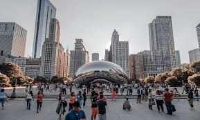

While I have lived in St. Louis for my entire life, I have always been in love with the idea of traveling. Over the past few years I have had the pleasure of traveling to several different cities all over the country. While I won't cover everywhere that I have been, this page will describe my 5 favorite cities that I have ever been to.
Back in August 2019, I actually got onto a plane for the first time to travel to Washington D.C.. I traveledd with a couple of friends to go to the Pokemon World Champinonships. While I didn't actually compete, I did spend plenty of quality time with friends I hadn't seen in months, some in years. I spent a majority of the time sightseeing & visiting famous landmarks such as The Capitol Building as show in the picture below & trying out plenty of local resturaunts.
So the first time that I actually left the St. Louis area was when I was 4 and I went to Houston with my family. We took a 12 hour road trip through the majority of Tornado Valley for my Oldest aunt's wedding. While I don't remeber a lot about the original trip, I have been back on several occasions, & plan on going back in October for my cousin's birthday.
While it might not sound like a very interesting destination, Madison Wisconson is actually a great idea for a vacation with friends. I've gone at least once a year for the past few years for local Pokemon events. I would highly recommend going to the resturaunt called The Marketplace, or enjoying the sunset at Lake Monana.
By far my favorite midwest city has to be Indianapolis. My friends & I have made it a yearly tradition to visit Indy at least once a year since I was 17. One of the funniest moments in my life happened in Indy; which was when I had to find an "inebriated" friend of mine who was wondering around downtown. When we finally found him, he was at Denny's, but somehow had lost his shoes.
Last, but not least on this list is the Windy City, Chicago. While I have only actually been there once, it will always stand out as one of the most enjoyable trips that I have ever taken. In one day I saw The Blue Man Group, visited Navy Pier, won $1,200 at a casino, & helped a buddy of mine meet his now wife.
